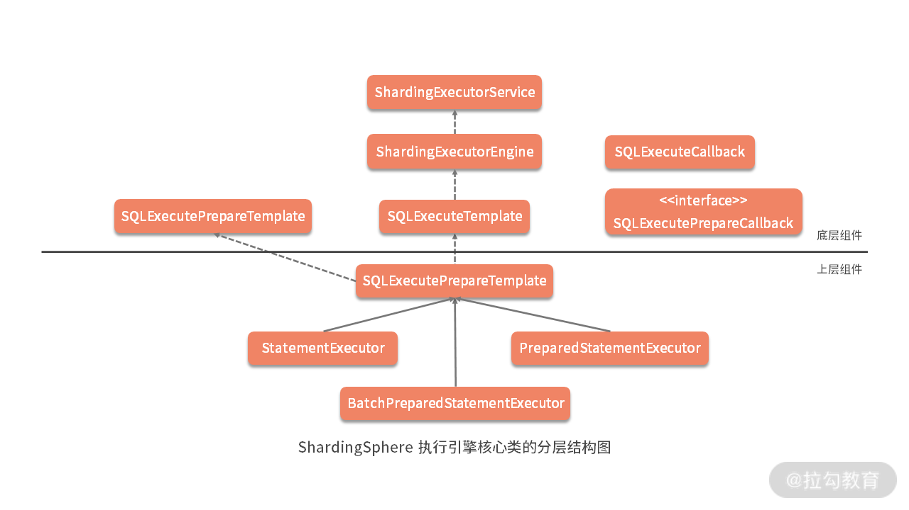

- 00 如何正确学习一款分库分表开源框架？.md.html
- 01 从理论到实践：如何让分库分表真正落地？.md.html
- 02 顶级项目：ShardingSphere 是一款什么样的 Apache 开源软件？.md.html
- 03 规范兼容：JDBC 规范与 ShardingSphere 是什么关系？.md.html
- 04 应用集成：在业务系统中使用 ShardingSphere 的方式有哪些？.md.html
- 05 配置驱动：ShardingSphere 中的配置体系是如何设计的？.md.html
- 06 数据分片：如何实现分库、分表、分库+分表以及强制路由？（上）.md.html
- 07 数据分片：如何实现分库、分表、分库+分表以及强制路由？（下）.md.html
- 08 读写分离：如何集成分库分表+数据库主从架构？.md.html
- 09 分布式事务：如何使用强一致性事务与柔性事务？.md.html
- 10 数据脱敏：如何确保敏感数据的安全访问？.md.html
- 11 编排治理：如何实现分布式环境下的动态配置管理？.md.html
- 12 从应用到原理：如何高效阅读 ShardingSphere 源码？.md.html
- 13 微内核架构：ShardingSphere 如何实现系统的扩展性？.md.html
- 14 分布式主键：ShardingSphere 中有哪些分布式主键实现方式？.md.html
- 15 解析引擎：SQL 解析流程应该包括哪些核心阶段？（上）.md.html
- 16 解析引擎：SQL 解析流程应该包括哪些核心阶段？（下）.md.html
- 17 路由引擎：如何理解分片路由核心类 ShardingRouter 的运作机制？.md.html
- 18 路由引擎：如何实现数据访问的分片路由和广播路由？.md.html
- 19 路由引擎：如何在路由过程中集成多种路由策略和路由算法？.md.html
- 20 改写引擎：如何理解装饰器模式下的 SQL 改写实现机制？.md.html
- 21 执行引擎：分片环境下 SQL 执行的整体流程应该如何进行抽象？.md.html
- 22 执行引擎：如何把握 ShardingSphere 中的 Executor 执行模型？（上）.md.html
- 23 执行引擎：如何把握 ShardingSphere 中的 Executor 执行模型？（下）.md.html
- 24 归并引擎：如何理解数据归并的类型以及简单归并策略的实现过程？.md.html
- 25 归并引擎：如何理解流式归并和内存归并在复杂归并场景下的应用方式？.md.html
- 26 读写分离：普通主从架构和分片主从架构分别是如何实现的？.md.html
- 27 分布式事务：如何理解 ShardingSphere 中对分布式事务的抽象过程？.md.html
- 28 分布式事务：ShardingSphere 中如何集成强一致性事务和柔性事务支持？（上）.md.html
- 29 分布式事务：ShardingSphere 中如何集成强一致性事务和柔性事务支持？（下）.md.html
- 30 数据脱敏：如何基于改写引擎实现低侵入性数据脱敏方案？.md.html
- 31 配置中心：如何基于配置中心实现配置信息的动态化管理？.md.html
- 32 注册中心：如何基于注册中心实现数据库访问熔断机制？.md.html
- 33 链路跟踪：如何基于 Hook 机制以及 OpenTracing 协议实现数据访问链路跟踪？.md.html
- 34 系统集成：如何完成 ShardingSphere 内核与 Spring+SpringBoot 的无缝整合？.md.html
- 35 结语：ShardingSphere 总结及展望.md.html
21 执行引擎：分片环境下 SQL 执行的整体流程应该如何进行抽象？
从今天开始，我们将开始一个全新的主题，即 ShardingSphere 的执行引擎（ExecuteEngine）。一旦我们获取了从路由引擎和改写引擎中所生成的 SQL，执行引擎就会完成这些SQL在具体数据库中的执行。
执行引擎是 ShardingSphere 的核心模块，接下来我们将通过三个课时来对其进行全面介绍。今天，我们先讨论在分片环境下，ShardingSphere 对 SQL 执行的整体流程的抽象过程，后两个课时会向你讲解“如何把握 ShardingSphere 中的 Executor 执行模型”。
ShardingSphere 执行引擎总体结构
在讲解具体的源代码之前，我们从《17 | 路由引擎：如何理解分片路由核心类 ShardingRouter 的运作机制？》中的 PreparedQueryShardingEngine 和 SimpleQueryShardingEngine 这两个类出发，看看在 ShardingSphere 中使用它们的入口。
我们在ShardingStatement类中找到了如下所示的一个 shard 方法，这里用到了 SimpleQueryShardingEngine：
private void shard(final String sql) {
//从 Connection 中获取 ShardingRuntimeContext 上下文
ShardingRuntimeContext runtimeContext = connection.getRuntimeContext();
//创建 SimpleQueryShardingEngine
SimpleQueryShardingEngine shardingEngine = new SimpleQueryShardingEngine(runtimeContext.getRule(), runtimeContext.getProps(), runtimeContext.getMetaData(), runtimeContext.getParseEngine());
//执行分片路由并获取路由结果
sqlRouteResult = shardingEngine.shard(sql, Collections.emptyList());
}
而在ShardingPreparedStatement中也存在一个类似的 shard 方法。
从设计模式上讲，ShardingStatement 和 ShardingPreparedStatement 实际上就是很典型的外观类，它们把与 SQL 路由和执行的入口类都整合在一起。
通过阅读源码，我们不难发现在 ShardingStatement 中存在一个 StatementExecutor；而在 ShardingPreparedStatement 中也存在 PreparedStatementExecutor 和 BatchPreparedStatementExecutor，这些类都以 Executor 结尾，显然这就是我们要找的 SQL 执行引擎的入口类。
我们发现上述三个 Executor 都位于 sharding-jdbc-core 工程中。
此外，还有一个与 sharding-core-route 和 sharding-core-rewrite 并列的sharding-core-execute 工程，从命名上看，这个工程应该也与执行引擎相关。果然，我们在这个工程中找到了ShardingExecuteEngine 类，这是分片执行引擎的入口类。
然后，我们又分别找到了 SQLExecuteTemplate 和 SQLExecutePrepareTemplate 类，这两个是典型的SQL 执行模板类。
根据到目前为止对 ShardingSphere 组件设计和代码分层风格的了解，可以想象，在层次关系上，ShardingExecuteEngine 是底层对象，SQLExecuteTemplate 应该依赖于 ShardingExecuteEngine；而 StatementExecutor、PreparedStatementExecutor 和 BatchPreparedStatementExecutor 属于上层对象，应该依赖于 SQLExecuteTemplate。我们通过简单阅读这些核心类之前的引用关系，印证了这种猜想。
基于以上分析，我们可以给出 SQL 执行引擎的整体结构图（如下图），其中横线以上部分位于 sharding-core-execute 工程，属于底层组件；而直线以下部分位于 sharding-jdbc-core 中，属于上层组件。这种分析源码的能力也是《12 | 从应用到原理：如何高效阅读 ShardingSphere 源码？》中提到的“基于分包设计原则阅读源码”的一种具体表现：

ShardingSphere 执行引擎核心类的分层结构图
另一方面，我们在上图中还看到 SQLExecuteCallback 和 SQLExecutePrepareCallback，显然，它们的作用是完成 SQL 执行过程中的回调处理，这也是一种非常典型的扩展性处理方式。
ShardingExecuteEngine
按照惯例，我们还是从位于底层的 ShardingExecuteEngine 开始切入。与路由和改写引擎不同，ShardingExecuteEngine 是 ShardingSphere 中唯一的一个执行引擎，所以直接设计为一个类而非接口，这个类包含了如下的变量和构造函数：
private final ShardingExecutorService shardingExecutorService;
private ListeningExecutorService executorService;
public ShardingExecuteEngine(final int executorSize) {
shardingExecutorService = new ShardingExecutorService(executorSize);
executorService = shardingExecutorService.getExecutorService();
}
1.ExecutorService
如上所示，我们可以看出，这里有两个以 ExecutorService 结尾的变量，显然从命名上不难看出它们都是执行器服务，与 JDK 中的 java.util.concurrent.ExecutorService 类似。其中ListeningExecutorService来自 Google 的工具包 Guava；而ShardingExecutorService是 ShardingSphere 中的自定义类，包含了 ListeningExecutorService 的构建过程。接下来我们对两者分别展开讲述。
- ShardingExecutorService
我们发现 ShardingExecutorService 包含了一个 JDK 的 ExecutorService，它的创建过程如下，这里用到的 newCachedThreadPool 和 newFixedThreadPool 都是 JDK 提供的常见方法：
private ExecutorService getExecutorService(final int executorSize, final String nameFormat) {
ThreadFactory shardingThreadFactory = ShardingThreadFactoryBuilder.build(nameFormat);
return 0 == executorSize ? Executors.newCachedThreadPool(shardingThreadFactory) : Executors.newFixedThreadPool(executorSize, shardingThreadFactory);
}
- ListeningExecutorService
由于 JDK 中普通线程池返回的 Future 功能比较单一，所以 Guava 提供了 ListeningExecutorService 对其进行装饰。我们可以通过 ListeningExecutorService 对 ExecutorService 做一层包装，返回一个 ListenableFuture 实例，而 ListenableFuture 又是继承自 Future，扩展了一个 addListener 监听方法，这样当任务执行完成就会主动回调该方法。ListeningExecutorService 的构建过程如下所示：
executorService = MoreExecutors.listeningDecorator(getExecutorService(executorSize, nameFormat));
oreExecutors.addDelayedShutdownHook(executorService, 60, TimeUnit.SECONDS);
明确了执行器 ExecutorService 之后，我们回到 ShardingExecuteEngine 类，该类以 groupExecute 方法为入口，这个方法参数比较多，也单独都列了一下：
/**
* @param inputGroups：输入组
* @param firstCallback：第一次分片执行回调
* @param callback：分片执行回调
* @param serial：是否使用多线程进行执行
* @param <I>：输入值类型
* @param <O>：返回值类型
* @return 执行结果
* @throws SQLException：抛出异常
*/
public <I, O> List<O> groupExecute(
final Collection<ShardingExecuteGroup<I>> inputGroups, final ShardingGroupExecuteCallback<I, O> firstCallback, final ShardingGroupExecuteCallback<I, O> callback, final boolean serial)
throws SQLException {
if (inputGroups.isEmpty()) {
return Collections.emptyList();
}
return serial ? serialExecute(inputGroups, firstCallback, callback) : parallelExecute(inputGroups, firstCallback, callback);
}
这里的分片执行组 ShardingExecuteGroup 对象实际上就是一个包含输入信息的列表，而上述 groupExecute 方法的输入是一个 ShardingExecuteGroup 的集合。通过判断输入参数 serial 是否为 true，上述代码流程分别转向了serialExecute 和 parallelExecute 这两个代码分支，接下来我来分别讲解一下这两个代码分支。
2.SerialExecute
我们先来看 serialExecute 方法，顾名思义，该方法用于串行执行的场景：
private <I, O> List<O> serialExecute(final Collection<ShardingExecuteGroup<I>> inputGroups, final ShardingGroupExecuteCallback<I, O> firstCallback,
final ShardingGroupExecuteCallback<I, O> callback) throws SQLException {
Iterator<ShardingExecuteGroup<I>> inputGroupsIterator = inputGroups.iterator();
//获取第一个输入的ShardingExecuteGroup
ShardingExecuteGroup<I> firstInputs = inputGroupsIterator.next();
//通过第一个回调 firstCallback 完成同步执行的 syncGroupExecute
List<O> result = new LinkedList<>(syncGroupExecute(firstInputs, null == firstCallback ? callback : firstCallback));
//对剩下的 ShardingExecuteGroup，通过回调 callback 逐个同步执行 syncGroupExecute
for (ShardingExecuteGroup<I> each : Lists.newArrayList(inputGroupsIterator)) {
result.addAll(syncGroupExecute(each, callback));
}
return result;
}
上述代码的基本流程是获取第一个输入的 ShardingExecuteGroup，通过第一个回调 firstCallback 完成同步执行的 syncGroupExecute 方法。然后对剩下的 ShardingExecuteGroup，通过回调 callback 逐个执行 syncGroupExecute 方法。这里的 syncGroupExecute 方法如下所示：
private <I, O> Collection<O> syncGroupExecute(final ShardingExecuteGroup<I> executeGroup, final ShardingGroupExecuteCallback<I, O> callback) throws SQLException {
return callback.execute(executeGroup.getInputs(), true, ShardingExecuteDataMap.getDataMap());
}
我们看到同步执行的过程实际上是交给了 ShardingGroupExecuteCallback 回调接口：
public interface ShardingGroupExecuteCallback<I, O> {
Collection<O> execute(Collection<I> inputs, boolean isTrunkThread, Map<String, Object> shardingExecuteDataMap) throws SQLException;
}
这里的 ShardingExecuteDataMap 相当于一个用于 SQL 执行的数据字典，这些数据字典保存在 ThreadLocal 中，从而确保了线程安全。我们可以根据当前的执行线程获取对应的 DataMap 对象。
3.ParallelExecute
这样，关于串行执行的流程就介绍完了，接下来我们来看并行执行的 parallelExecute 方法：
private <I, O> List<O> parallelExecute(final Collection<ShardingExecuteGroup<I>> inputGroups, final ShardingGroupExecuteCallback<I, O> firstCallback,
final ShardingGroupExecuteCallback<I, O> callback) throws SQLException {
Iterator<ShardingExecuteGroup<I>> inputGroupsIterator = inputGroups.iterator();
//获取第一个输入的 ShardingExecuteGroup
ShardingExecuteGroup<I> firstInputs = inputGroupsIterator.next();
//通过 asyncGroupExecute 执行异步回调
Collection<ListenableFuture<Collection<O>>> restResultFutures = asyncGroupExecute(Lists.newArrayList(inputGroupsIterator), callback);
//获取执行结果并组装返回
return getGroupResults(syncGroupExecute(firstInputs, null == firstCallback ? callback : firstCallback), restResultFutures);
}
注意到这里有一个异步执行方法 asyncGroupExecute，传入参数是一个 ShardingExecuteGroup 列表：
private <I, O> Collection<ListenableFuture<Collection<O>>> asyncGroupExecute(final List<ShardingExecuteGroup<I>> inputGroups, final ShardingGroupExecuteCallback<I, O> callback) {
Collection<ListenableFuture<Collection<O>>> result = new LinkedList<>();
for (ShardingExecuteGroup<I> each : inputGroups) {
result.add(asyncGroupExecute(each, callback));
}
return result;
}
这个方法中针对每个传入的 ShardingExecuteGroup，再次调用一个重载的异步 asyncGroupExecute 方法：
private <I, O> ListenableFuture<Collection<O>> asyncGroupExecute(final ShardingExecuteGroup<I> inputGroup, final ShardingGroupExecuteCallback<I, O> callback) {
final Map<String, Object> dataMap = ShardingExecuteDataMap.getDataMap();
return executorService.submit(new Callable<Collection<O>>() {
@Override
public Collection<O> call() throws SQLException {
return callback.execute(inputGroup.getInputs(), false, dataMap);
}
});
}
显然，作为异步执行方法，这里就会使用 Guava 的 ListeningExecutorService 来提交一个异步执行的任务并返回一个 ListenableFuture，而这个异步执行的任务就是具体的回调。
最后，我们来看 parallelExecute 方法的最后一句，即调用 getGroupResults 方法获取执行结果：
private <O> List<O> getGroupResults(final Collection<O> firstResults, final Collection<ListenableFuture<Collection<O>>> restFutures) throws SQLException {
List<O> result = new LinkedList<>(firstResults);
for (ListenableFuture<Collection<O>> each : restFutures) {
try {
result.addAll(each.get());
} catch (final InterruptedException | ExecutionException ex) {
return throwException(ex);
}
}
return result;
}
熟悉 Future 用法的同学对上述代码应该不会陌生，我们遍历 ListenableFuture，然后调动它的 get 方法同步等待返回结果，最后当所有的结果都获取到之后组装成一个结果列表并返回，这种写法在使用 Future 时非常常见。
我们回过头来看，无论是 serialExecute 方法还是 parallelExecute 方法，都会从 ShardingExecuteGroup 中获取第一个 firstInputs 元素并进行执行，然后剩下的再进行同步或异步执行。ShardingSphere 这样使用线程的背后有其独特的设计思路。考虑到当前线程同样也是一种可用资源，让第一个任务由当前线程进行执行就可以充分利用当前线程，从而最大化线程的利用率。
至此，关于 ShardingExecuteEngine 类的介绍就告一段落。作为执行引擎，ShardingExecuteEngine 所做的事情就是提供一个多线程的执行环境。在系统设计上，这也是在日常开发过程中可以参考的一个技巧。我们可以设计并实现一个多线程执行环境，这个环境不需要完成具体的业务操作，而只需要负责执行传入的回调函数。ShardingSphere 中的ShardingExecuteEngine 就是提供了这样一种环境，同样的实现方式在其他诸如 Spring 等开源框架中也都可以看到。
接下来，就让我们来看一下 ShardingSphere 如何通过回调完成 SQL 的真正执行。
回调接口 ShardingGroupExecuteCallback
回调接口 ShardingGroupExecuteCallback 的定义非常简单：
public interface ShardingGroupExecuteCallback<I, O> {
Collection<O> execute(Collection<I> inputs, boolean isTrunkThread, Map<String, Object> shardingExecuteDataMap) throws SQLException;
}
该接口根据传入的泛型 inputs 集合和 shardingExecuteDataMap 完成真正的 SQL 执行操作。在 ShardingSphere 中，使用匿名方法实现 ShardingGroupExecuteCallback 接口的地方有很多，但显式实现这一接口的只有一个类，即 SQLExecuteCallback 类，这是一个抽象类，它的 execute 方法如下所示：
@Override
public final Collection<T> execute(final Collection<StatementExecuteUnit> statementExecuteUnits,
final boolean isTrunkThread, final Map<String, Object> shardingExecuteDataMap) throws SQLException {
Collection<T> result = new LinkedList<>();
for (StatementExecuteUnit each : statementExecuteUnits) {
result.add(execute0(each, isTrunkThread, shardingExecuteDataMap));
}
return result;
}
对于每个输入的 StatementExecuteUnit 数据结构，上述 execute 方法会进一步执行一个 execute0 方法，如下所示：
private T execute0(final StatementExecuteUnit statementExecuteUnit, final boolean isTrunkThread, final Map<String, Object> shardingExecuteDataMap) throws SQLException {
//设置 ExecutorExceptionHandler
ExecutorExceptionHandler.setExceptionThrown(isExceptionThrown);
//获取 DataSourceMetaData，这里用到了缓存机制
DataSourceMetaData dataSourceMetaData = getDataSourceMetaData(statementExecuteUnit.getStatement().getConnection().getMetaData());
//初始化 SQLExecutionHook
SQLExecutionHook sqlExecutionHook = new SPISQLExecutionHook();
try {
RouteUnit routeUnit = statementExecuteUnit.getRouteUnit();
//启动执行钩子
sqlExecutionHook.start(routeUnit.getDataSourceName(), routeUnit.getSqlUnit().getSql(), routeUnit.getSqlUnit().getParameters(), dataSourceMetaData, isTrunkThread, shardingExecuteDataMap);
//执行 SQL
T result = executeSQL(routeUnit.getSqlUnit().getSql(), statementExecuteUnit.getStatement(), statementExecuteUnit.getConnectionMode());
//成功钩子
sqlExecutionHook.finishSuccess();
return result;
} catch (final SQLException ex) {
//失败钩子
sqlExecutionHook.finishFailure(ex);
//异常处理
ExecutorExceptionHandler.handleException(ex);
return null;
}
}
这段代码每一句的含义都比较明确，这里引入了一个 ExecutorExceptionHandler 用于异常处理，同时也引入了一个 SPISQLExecutionHook 对执行过程嵌入钩子。关于基于 SPI 机制的 Hook 实现机制，我们在前面的 SQL 解析和路由引擎中已经看到过很多次，这里不再赘述。我们看到，真正执行 SQL 的过程是交给 executeSQL 模板方法进行完成，需要 SQLExecuteCallback 的各个子类实现这一模板方法。
在 ShardingSphere 中，没有提供任何的 SQLExecuteCallback 实现类，但大量采用匿名方法来完成 executeSQL 模板方法的实现。例如，在下一课时《22 | 执行引擎：如何把握 ShardingSphere 中的 Executor 执行模型？（上）》的 StatementExecutor 类中，executeQuery 方法就创建了一个 SQLExecuteCallback 匿名实现方法，用来完成查询操作：
public List<QueryResult> executeQuery() throws SQLException {
final boolean isExceptionThrown = ExecutorExceptionHandler.isExceptionThrown();
//创建 SQLExecuteCallback 并执行查询
SQLExecuteCallback<QueryResult> executeCallback = new SQLExecuteCallback<QueryResult>(getDatabaseType(), isExceptionThrown) {
@Override
protected QueryResult executeSQL(final String sql, final Statement statement, final ConnectionMode connectionMode) throws SQLException {
return getQueryResult(sql, statement, connectionMode);
}
};
//执行 SQLExecuteCallback 并返回结果
return executeCallback(executeCallback);
}
模板类 SQLExecuteTemplate
在 ShardingSphere 执行引擎的底层组件中，还有一个类需要展开，这就是模板类 SQLExecuteTemplate，它是 ShardingExecuteEngine 的直接使用者。从命名上看，这是一个典型的模板工具类，定位上就像 Spring 中的 JdbcTemplate 一样。但凡这种模板工具类，其实现一般都比较简单，基本就是对底层对象的简单封装。
SQLExecuteTemplate 也不例外，它要做的就是对 ShardingExecuteEngine 中的入口方法进行封装和处理。ShardingExecuteEngine 的核心方法就只有一个，即 executeGroup 方法：
public <T> List<T> executeGroup(final Collection<ShardingExecuteGroup<? extends StatementExecuteUnit>> sqlExecuteGroups, final SQLExecuteCallback<T> firstCallback, final SQLExecuteCallback<T> callback) throws SQLException {
try {
return executeEngine.groupExecute((Collection) sqlExecuteGroups, firstCallback, callback, serial);
} catch (final SQLException ex) {
ExecutorExceptionHandler.handleException(ex);
return Collections.emptyList();
}
}
可以看到，这个方法所做的事情就是直接调用 ShardingExecuteEngine 的 groupExecute 方法完成具体的执行工作，并添加了异常处理机制而已。
从源码解析到日常开发
我们可以从今天的内容中，提炼出来许多技巧，并应用于日常开发过程中。比较实用的一个技巧是：我们可以使用 Guava 提供的 ListeningExecutorService 来强化 JDK 中基于普通 Future 的执行器服务 ExecutorService。同时，我们也看到了基于 Callback 的系统扩展机制，我们可以基于这种扩展机制，构建一个独立的运行环境，从而把与业务相关的所有操作通过回调得以实现。
小结与预告
本课时是介绍 ShardingSphere 执行引擎的第一部分内容，介绍了分片环境下 SQL 执行流程的抽象过程。我们先引出了执行引擎这个核心类，然后分别从执行器服务、执行回调以及执行模板类等维度对整个执行流程展开了详细讲述。
最后这里给你留一道思考题：在基于多线程技术实现 Executor 时，ShardingSphere 应用了哪些技巧？欢迎你在留言区与大家讨论，我将 一 一 点评解答。
下一课时，我们继续介绍 ShardingSphere 的执行引擎，我们将重点关注 SQL 的执行器 StatementExecutor。